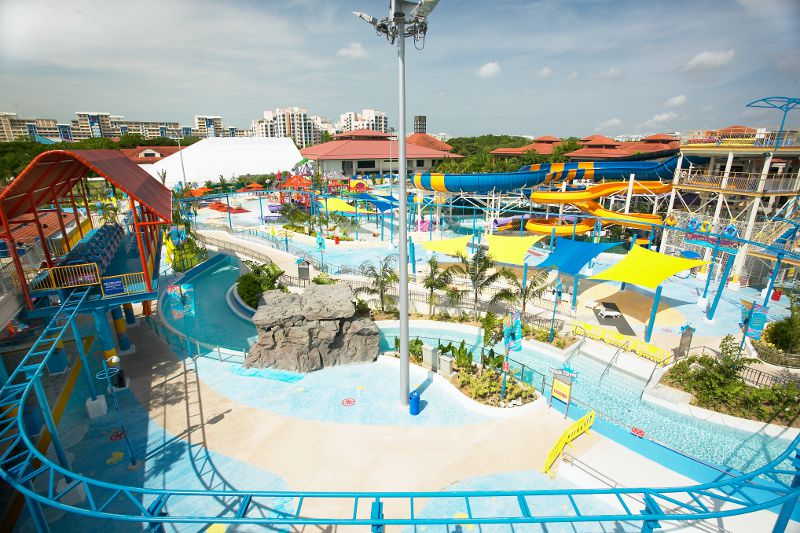
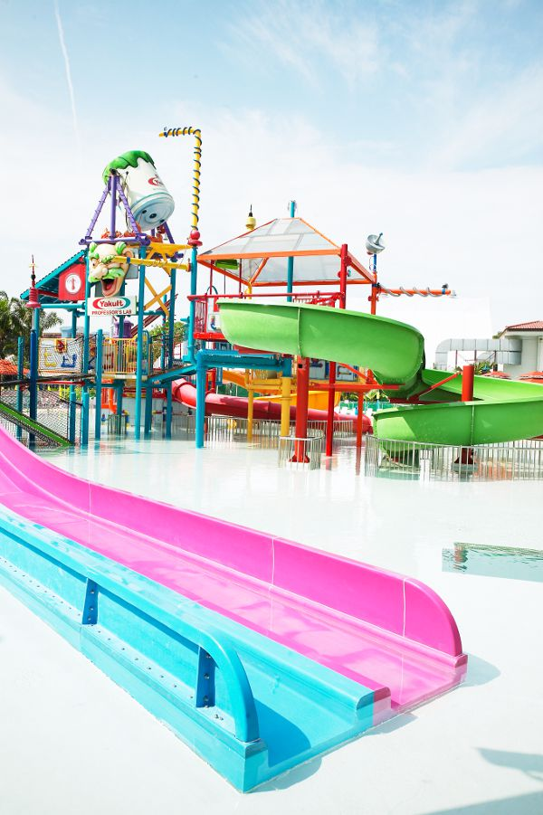
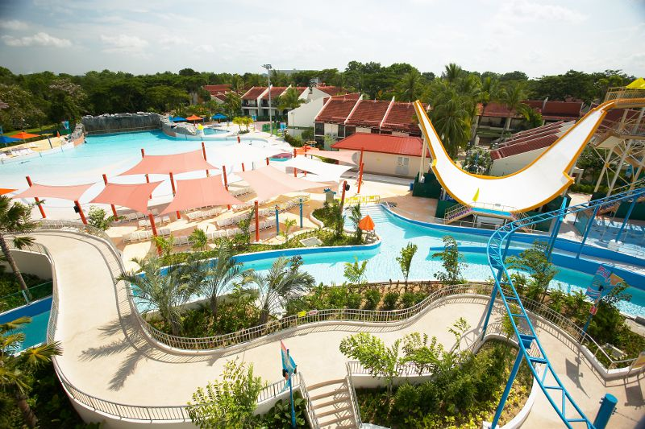

Get wet and splashy in the East
Opened in 2004, Wild Wild Wet is Singapore's first water park. We promise you a day of thrills and spills for the whole family. Situated at Downtown East, it remains one of the most popular family attractions in Singapore by NTUC Club. From adrenalin-pumping rides to relaxing and gentle ones, visitors are guaranteed a fun-filled day while they beat the heat.
  Amidst the fun, our guests' safety remains our top priority. Various inflatable floats customised for different rides ensure adventures come with safety in mind as well. To enhance safety, life jackets are available for free usage for adults and children. Baby water carriers are also available for free to allow parents to have a splashing good time with their infants. Our lifeguards are specially trained in stringent international standards for lifeguarding at water-based attractions.
Not only do children's parties at Wild Wild Wet guarantee a memorable experience for the little ones, it also makes for a very unique location for company functions. Singaporean and PR senior citizens above 55 years of age, as well as toddlers below the age of three enjoy free admission. Family packages are also available.
Ticketing Information
| Admissions | |
| Adult (12 years old & above) | $16 |
| Child (aged 3 - 11 years old) | $11 |
| Family (2 adults and 2 children) | $44 |
| nEbO | $11.50 |
| Senior Citizen (aged 55 years old & above) | Free admission |
| Locker Rental (Coin Operated) | $1.00 - $3.00 |
Temporary Closure of Park Facilites
| ATTRACTION(S) | |
| Date | Attraction |
| - | Sky Rider |
| CORPORATE EVENT(S) | |
| Date | Event |
| 18 Mar 2012 | U Games Sports Mania (Till 2pm) |
| 22 Apr 2012 | Narpani Family Day |
| 26 May 2012 | May Day Carnival |
Note:
- Corporate Event closure will be closed to ALL card members, Costa Sands Resort (Downtown East / Pasir Ris) guests and members of the public
- The period of closure is subject to change
- Attractions are subjected to close without prior notice
- For other Park Maintenance Schedule, please click HERE
Terms & Conditions:
NTUC Plus! & Plus! Card holders
- Present NTUC Plus! or Plus! card at admission to enjoy offer
- NTUC Plus! or Plus! card member must be present during ticket purchase
- NTUC Plus! or Plus! card member can purchase a maximum of 4 tickets for accompanying guests
- Temporary NTUC Plus! or Plus!card/receipt will not be entitled to LinkPoints scheme (issuance / redemption)
- Park may be closed for Corporate / private events and admission will be denied
- Not valid for Corporate and/or Travel Agent Sales.
- The promotion is not valid with other promotions, events, discounts and vouchers.
- The management reserves the right to amend the terms and conditions without any prior notice.
Terms & Conditions:
NTUC Plus! & Plus! Card holders
- nEbO member can purchase a maximum of 1 additional tickets for an accompanying guest
- Additional tickets will be priced at $11.50 + 525 LinkPoints each and applicable for instant redemption
- Present nEbO Plus! card at admission to enjoy offer
- nEbO member must be present during ticket purchase
- Temporary nEbO card/receipt will not be entitled to LinkPoints scheme (issuance / redemption)
- Park may be closed for Corporate / private events and admission will be denied
- Not valid for Corporate and/or Travel Agent Sales.
- The promotion is not valid with other promotions, events, discounts and vouchers.
- The management reserves the right to amend the terms and conditions without any prior notice
Senior citizens (aged 55 years old & above, applicable to Singapore citizens and permanent residents only) are entitled to free admission. Proof of age is required at Admission counter.
Each ticket entitles you to a day of unlimited access to Wild Wild Wet's facilities. Please get your hand stamped before leaving the park in order to re-enter on the same day.
Operation Hours
Mon, Wed - Fri: 1pm - 7pm
Sat, Sun, Gazetted School & Public Holidays: 10am - 7pm
Tel: 6581 9128
How to reach us
1 Pasir Ris Close,
Singapore519599
Dial : (65) 6581 9128
www.wildwildwet.com
www.facebook.com/wildwildwet